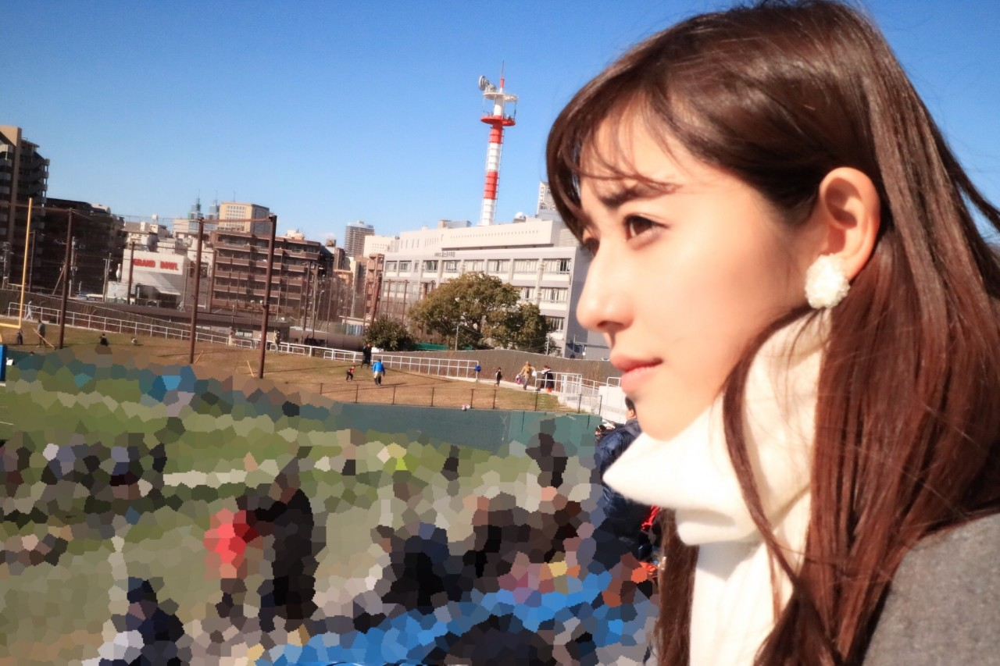
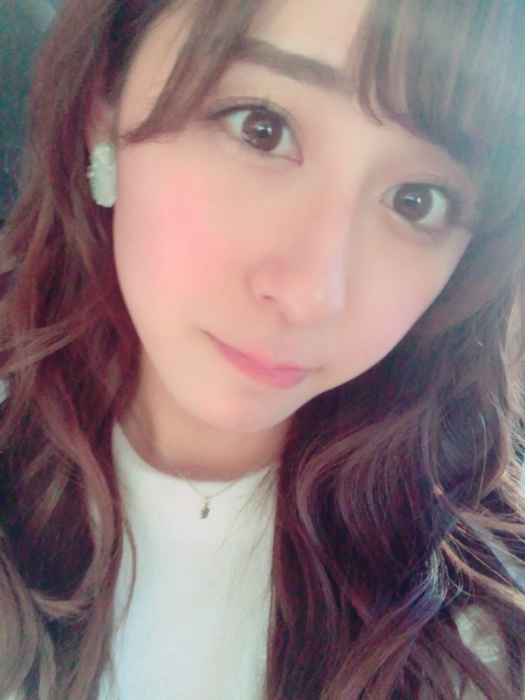

| 2017/01 21 Sat | 斎藤ちはる The Huddle Bowl |
ちはるーむへようこそ
今日はお仕事の前に少し時間があったので
フラッグフットボールの試合を
母と観に行きました◎
「The Huddle Bowl」という
チャリティーイベントです。
各大学などのOBの皆さんが
チーム毎に分かれて闘い、
その登録費や参加費などの
利益がMAKE A WISHという団体を通じて
難病の子供達に寄付されます。
昔の仲間と久しぶりに会い、
そしてその仲間と共にまた戦う。
そんな楽しい状況ながらも
チャリティーに繋がっている。
なんて素敵な大会なんだろう◎

少しブレてるのは母のご愛嬌ということで☺︎
寒かったけど日差しが暖かくて
風が止まると観戦日和でした！
フラッグフットボールは
腰にフラッグをつけてやるスポーツで
タックルは無く、
タッチをしたり腰のフラッグを取られたら
タックルされた時と同じ扱いを受けることになります。
なのでフラッグフットボールは
体と体のぶつかり合いがないので
子供でも、引退したお父さんたちでも
安全に楽しめるのです◎
現に私も小学生のころに
レクリエーションでやった記憶があります！
いつもはなかなか時間が合わないのですが
今日は行けて良かった〜( ´ｰ`)
楽しかった！
--------------------------------------------♡
♬ ChihaMusic
「GIFT」Mr.Childrenさん
聞いたら勇気が出てくる曲です。
一時期ずっと聞いていたな〜
優しくて力強い声が大好き。
"白と黒のその間に無限の色が広がってる
君に似合う色探してやさしい名前つけたなら
ほら1番きれいな色
今君に贈るよ"
人はそれぞれ色んな個性があって
色んな色を持っている。
白黒はっきりして！という人もいるけど
そんなの難しい。
自分らしく自分の色を伸ばして
いけたらいいんじゃないのかな。

明日は個別握手会です〜◎
楽しみ(﹡ˆ ˆ﹡)
おやすみ
斎藤ちはる